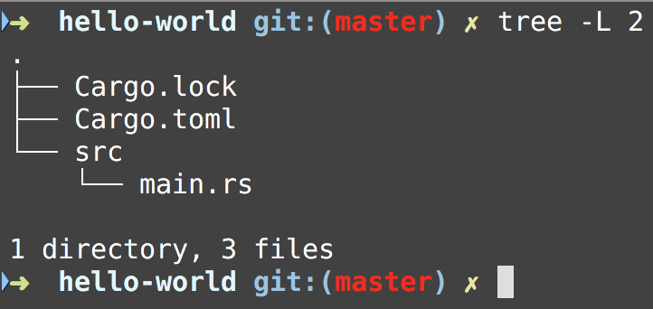
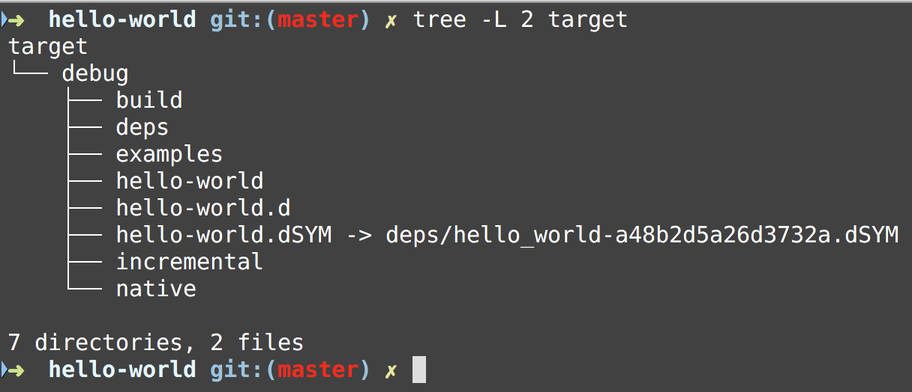

Rust Workshop
- Hello World
- Variables
- Data Streams
- Control Flow
- Functions
- Data Types
- Comments
- Ownership
- References
- Borrowing
- Slices
- Structs
- Methods
- Enums
- Patterns
- Modules
- Standard Library
- Error Handling
- Generics
- Lifetimes
- Testing
Installing Rust
To install Rust in Linux and Mac OS X run the following command:
curl https://sh.rustup.rs -sSf | sh
For other installation methods please read the following documentation
Add the cargo binaries to your path by adding the following entry in ~/.profile, ~/.bash_profile:
export PATH="$HOME/.cargo/bin:$PATH"
Installing Rust in Windows
On Windows, go to install and follow the instructions for installing Rust.
You will need to install C++ build tools for Visual Studio 2013 or later here but it is best to just install Visual Studio Build Tools
The tools are in the Other Tools and Frameworks section which looks like this:

Check Rust Installation
If Rust is installed then you should be able to run the following command in your terminal windows:
rustc --version
rustc 1.26.2 (594fb253c 2018-06-01)
Updating Rustlang
In order to update the rust binaries you need to run the following command:
rustup update
Now when we run the --version options with rustc a new version should be reported if the update found a new version:
rustc --version
rustc 1.28.0 (9634041f0 2018-07-30)
Viewing Local Documentation
In order to see local documentation you can run the following command:
rustup doc
Cargo Package Manager
Rust comes with a powerful package manager called cargo.
You can create new rust packages by using the cargo package manager.
The command you use is: cargo new with options and provide a name
Create a new binary template package
If you want to create a new rust binary template application then run the following command:
cargo new PACKAGE_NAME --bin
Create a new library template package
If you want to create a new rust library template application then run the following command:
cargo new PACKAGE_NAME --lib
The contents of a new binary template package
When you create a new binary application cargo will create the following files:

Notice that the following files were created:
- Cargo.lock
- This file locks your dependencies
- Cargo.toml
- This file will have basic metadata for the rust package and dependencies
- src directory
- main.rs
- This will be main program for the application
- main.rs
Contents of Cargo.toml:
[package]
name = "hello-world"
version = "0.1.0"
authors = ["Jean-Marcel Belmont <marcelbelmont@gmail.com>"]
[dependencies]
Contents of src/main.rs:
fn main() {
println!("Hello, world!");
}
Build Rust package
In order to build the rust package you can run the following command:

This command generates the target directory with the following content:

Running Rust package
You could run rust packages by issuing the following command:
cargo run
This will build and run the rust package.
Check the Rust package for build issues
You can use the cargo check command to see if your package will build but it will not create an executable.
Running individual cargo packages
You can run individual cargo packages like this:
cargo run -p strings
This will run the strings cargo package only
You should probably try to run cargo build before doing this in your system.
Running individual tests with cargo
You can run individual cargo tests in a particular package by doing the following:
cargo test -p testing
This will only run tests in the testing cargo package.